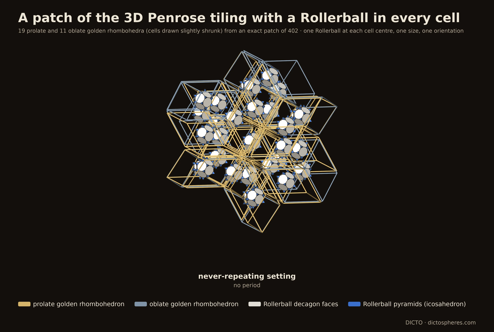

The Rollerball set in every golden rhombohedron, the resin cut into true scutoids, and a scutoid layer that never repeats
The Rollerball, like the icosahedron itself, cannot fill space. #117 showed how to make it fill space anyway: set it in a mould, pour resin round it and cut the resin into scutoids. That mould repeated. Here the moulds are the cells of a tiling that never repeats, and the scutoids follow it exactly.
This paper shows that the Rollerball, set at the centre of every golden rhombohedron of the 3D Penrose tiling, can have the resin of every cell cut into true scutoids, and that the resulting layer of scutoids never repeats; and it shows exactly where the pieces of neighbouring cells fail to meet edge to edge.
The starting point. The amber cell of #117 [5] is a space-filling mould with a solid set in it, the gap filled with resin and the resin divided into pieces. DICTO's combined method divides the resin by filling its two ends in two dimensions, the faces of the solid on the inside and a Voronoi pattern on the mould outside, and cutting the resin to fit; where the two patterns differ the pieces change neighbours, and they are scutoids. In the cubic moulds of #117 the Rollerball gives 72 pieces, all true scutoids (#117, Proposition 17). Those cells repeat periodically, while the icosahedral solids they hold do not. The next step sets icosahedra in a never-repeating setting. The natural one is the 3D Penrose tiling by the prolate and the oblate golden rhombohedron, found by Ammann and described by cut and project from ℤ6 by Kramer and Neri [1, 2]: its cells are icosahedral in their directions, and the tiling has no period.
The result. With one Rollerball at the centre of every rhombohedron, the combined method works in every cell (Theorem 1): 72 pieces, all true scutoids, in each of the 20 orientations of the two cells. The pieces come in 8 kinds per cell type, and no kind belongs to both types. The layer of pieces therefore determines the tiling, and it repeats no more than the tiling does (Figure 2).
The consequence. Inside runs of cells of one type the pieces of neighbouring cells meet top to top across the walls; at every wall between a prolate and an oblate cell they do not (Figure 4). Theorem 3 shows that this is forced within the mechanism that closes the same-type walls: the cores cannot all be placed as mirror images of their neighbours. The scutoids follow the tiling's order exactly; the seams between the two cell types remain.
How it was found. On 21 November 2026 the question became how icosahedra sit in a never-repeating setting. The same day the combined method was run in all 20 rhombohedron orientations for five cores (600 runs), a finite patch of 402 cells was built exactly, and the patterns on its 998 shared walls were compared. The next question was how to close the prolate–oblate seams; the mirror argument of §5 and its obstruction were found that evening.
How results are marked. By hand: a proof on paper. Exact: proved by a computation in exact arithmetic in ℚ(√5), with scripts and logs in the study folder. Cited: a published result used as stated. Argued: a reasoned argument that is not a complete proof. Throughout φ = (1 + √5)/2.
Two rhombohedra with golden faces, in twenty orientations, fill space without ever repeating. Each one gets the same core at its centre, the same way up.
The tiling. Let e1, …, e6 be (0, 1, φ), (0, −1, φ), (1, φ, 0), (−1, φ, 0), (φ, 0, 1), (−φ, 0, 1), one vertex of an icosahedron on each of its six five-fold axes, and ei′ their Galois conjugates (√5 → −√5). Exactly, Σ ei ei′T = 0, so the two spaces are orthogonal in ℝ6. For a triple A of indices and n ∈ ℤ6, the rhombohedron n + CA spanned by the ea, a ∈ A, is a tile when the point γ lies in the open parallelepiped π′(n + 1A/2) + Σb∉A [−½, ½] eb′ (the dual of the cubic complex; the standard cut-and-project construction, in Kramer and Neri's form [1, 2]). The 20 triples give 10 prolate rhombohedra, of volume 3 + √5, and 10 oblate ones, of volume 1 + √5, the ratio φ. We took γ = (1234/10007, −567/10009, 891/10037), which lies on no window boundary in the patch (exact), and kept the tiles whose centres lie within 4 edge lengths of the origin.
Lemma 2 (the patch and the scales). Exact in ℚ(√5) (study amber-ammann, scripts/tiling.py, scripts/s0.py).
(i) The patch has 402 rhombohedra, 278 prolate and 124 oblate, all 20 orientations present. It is face to face: its 1414 faces are 998 shared from opposite sides and 416 on the boundary; at each of its 814 interior edges the dihedral angles, multiples of 36°, add up to 360°; the tile volume 1856.899327 equals the volume enclosed by the boundary, with difference exactly 0.
(ii) In the window the prolate and oblate frequencies stand in the ratio φ, exactly.
(iii) Put a core (Rollerball, Fullerene Star, icosidodecahedron, icosahedron or dodecahedron, edge 1, its five-fold axes on the ei) at the centre of a rhombohedron spanned by s ea/3. The smallest s at which the core lies inside, s0, is the same for all 10 orientations of a type, and s0(oblate) = φ s0(prolate) for every core (Table 1). Each cell keeps the symmetry D3d of order 12, the stabiliser of the rhombohedron in the core's group Ih, found exactly.
The thin cell is the tight one: a core that just fits the oblate rhombohedron has room to spare in the prolate one.
Proof. Every check in (i) and (iii) is an exact sign or identity in ℚ(√5) in the scripts named, whose logs end PATCH OK and with the five values of Table 1 (the dihedral angles are identified from their exact cos²). (ii) The frequency of each triple is proportional to the volume of its window, |det(eb′)b∉A|, and the ratio of the prolate and oblate sums is φ exactly. ∎
| core | s0 prolate | s0 oblate = S0 |
|---|---|---|
| Rollerball | 6 + 3√5 | (21 + 9√5)/2 |
| Fullerene Star | (15 + 3√5)/2 | (15 + 9√5)/2 |
| icosidodecahedron | 6 | 3 + 3√5 |
| icosahedron | 3 | (3 + 3√5)/2 |
| dodecahedron | (3 + 3√5)/2 | (9 + 3√5)/2 |
The division. In each cell we run DICTO's combined method as stated in #117 [5, Theorem 15 and Proposition 17], unchanged except for the mould (the rhombohedron), the symmetry group used to sort the pieces into orbits (D3d instead of Th). The inner end of the resin is the pattern of the core's faces; the outer end is the Voronoi diagram, on the surface of the mould, of one seed per face: the face centroid (centroid seeds) or the centroid projected from the core's centre onto the mould (projected seeds). A wall is kept where an inner edge and its outer partner join the same faces; where the patterns differ, the vertices merge into a Y-vertex halfway between core and mould; bent walls are split into flat triangles. A division is valid when every piece boundary is a closed, embedded, consistently oriented surface, every wall is shared by exactly two pieces with opposite orientation, every piece has positive volume and the volumes add up exactly to the resin. Every one of these checks is exact: the embedding test compares every pair of triangles of a piece by exact orientation signs, and the Voronoi pattern is clipped by the bisector of every seed. A piece is a true scutoid when it has a Y-vertex and its neighbours on the core side and on the mould side differ (the shape is due to Gómez-Gálvez and co-workers [8]; DICTO builds it with flat faces [6, 7]).
Every golden rhombohedron gets a Rollerball and 72 scutoids. The prolate cells and the oblate cells use different scutoids, so the pieces alone tell where each cell is, and the never-repeating order of the tiling passes to the pieces intact.
Theorem 1 (the Rollerball in the 3D Penrose tiling). Exact in ℚ(√5) for (a) and (b); (c) by hand from (a), (b) and the window frequencies (study amber-ammann, scripts/exact_cell.py, scripts/exact_summary.py). Let T be a face-to-face tiling of space by translates of the 20 golden rhombohedra on e1, …, e6, and put one Rollerball, all of one size and one orientation, at the centre of every cell, at the common scale S0 = (21 + 9√5)/2 (mould spanned by S0 ea/3, Rollerball edge 1). Divide the resin of every cell by DICTO's combined method with centroid seeds.
(a) In each of the 10 prolate and 10 oblate orientations the division is valid. Each cell has 72 pieces, one on each face of the Rollerball (12 on the decagons, 60 on the pyramid triangles), and all 72 are true scutoids, with 30 Y-vertices per cell. The pieces fall into 8 kinds in the prolate cell and 8 kinds in the oblate cell: 2 decagon kinds (6 + 6 pieces) and 6 triangle kinds (60 pieces) in each.
(b) No kind of piece occurs in both cell types: every piece of a prolate cell differs in volume from every piece of an oblate cell, by at least 0.0806.
(c) The cores and pieces determine T, and T determines them; a translation maps the layer of cores and pieces onto itself exactly when it maps T onto itself. If T is a 3D Penrose tiling of this cut-and-project class, the layer has no period, and any two kinds, one from each cell type, occur with frequencies in an irrational ratio (φ times a ratio of whole numbers).
The same holds at 6/5 S0 (centroid and projected seeds) and with each cell at its own s0 (centroid seeds): valid in all 20 orientations, 72 of 72 true scutoids, 30 Y-vertices, 8 + 8 kinds, none shared.
Why does the layer remember the tiling? Each piece stands on one face of one core, so the pieces round a core are exactly its cell; and since no piece fits both kinds of cell, even a single piece tells which kind of cell it came from.
Proof. (a) The tiling T uses only the 20 cells, and each cell is divided on its own, so it suffices to divide the 20 cells. All 20 were run directly (not carried over by rotation), and each run passes the checks of validity listed in §2, with the volume gap exactly 0 in ℚ(√5); the counts of pieces, scutoids and Y-vertices are read off each run. Within each type the 10 orientations are rotations of one another in Ih, and for each prolate (oblate) orientation an element g of Ih, found exactly, maps the reference cell 023 (012) onto it and maps every one of its 72 pieces onto the piece on the image face (rotation check, exact). Within each cell, every element of the stabiliser D3d maps the piece on a face F onto the piece on its image face (orbit check, exact). Pieces are compared by their exact boundaries: each facet as the set of its boundary edges between exact points. The 16 kinds and their counts are listed in Table A1.
(b) Congruent pieces have equal volumes. The 16 exact volumes in ℚ(√5) of Table A1 are pairwise distinct, so the 8 orbits of each cell are 8 different kinds and no prolate kind is an oblate kind. The closest pair is the prolate triangle piece of volume 13861/3648 + (73841/43776)√5 ≈ 7.571397 and the oblate decagon piece of volume ≈ 7.490844; their exact difference is a nonzero element of ℚ(√5), ≈ 0.0806 (both values in the log).
(c) Each piece has one face of one core as its bottom, so the cell of a core is the union of the core and the pieces on its faces; the cells, and so T, can be read from the layer. Conversely, T fixes the layer: kinds by cell type (by (b), never mixed), positions by the cell centre, orientations by the cell's orientation. A translation t that maps the layer onto itself maps cores to cores (no piece is congruent to a Rollerball) and the pieces on a core to the pieces on its image, hence each cell to a cell, and is a period of T; the converse is clear. A tiling with a period has rational frequencies of its tile types, while in the cut-and-project tiling the prolate and oblate frequencies are proportional to the volumes of their windows (cited, standard), in the ratio φ (Lemma 2 (ii)). So T has no period, and neither has the layer. A kind k with mP(k) pieces per prolate cell and mO(k) per oblate cell occurs with frequency proportional to φ mP(k) + mO(k); by (b) one of the two is zero, so a prolate kind and an oblate kind occur in the ratio φ mP/mO, irrational. ∎

ammann_scenes.py, log ending FINAL ok).Here is the fence round the result. It is not a new tiling of the rhombohedra: the cells, and their never-repeating order, are Ammann's and Kramer and Neri's. What is new is that the resin of every cell can be cut into true scutoids, all of them, with one core size for both cells, and that the cut keeps the two cell types apart, so that the order of the tiling passes to the pieces without loss. Nor does Theorem 1 say that the pieces of neighbouring cells meet edge to edge; at prolate–oblate walls they do not (§5).
The Rollerball is the core for which every piece is a scutoid. Other icosahedral cores fit the same cells, with fewer scutoids, or none when the faces of the core already match the mould.
Proposition 4 (five cores). Exact as Theorem 1 (a), (b), with the same orbit and rotation checks (same study, 600 runs: 5 cores × 20 orientations × 3 scales × 2 seed rules; each setting's exact summary ends EXACT SUMMARY OK). For each core and setting of Table 2 the combined method gives a valid division in all 20 orientations, with the counts shown, and no kind of piece occurs in both cell types; so Theorem 1 (c) holds for each of them.
| core | setting | kinds P + O (shared) | scutoids per cell P, O | Y per cell P, O |
|---|---|---|---|---|
| Rollerball | S0, 6/5 S0, own; centroid seeds (6/5 S0 also projected) | 8 + 8 (0) | 72/72, 72/72 | 30, 30 |
| Fullerene Star | S0, 6/5 S0; projected seeds | 9 + 9 (0) | 66/80, 72/80 | 48, 42 |
| icosidodecahedron | 6/5 S0; both seed rules | 5 + 5 (0) | 20/32, 18/32 | 30, 30 |
| icosahedron | S0, 6/5 S0; projected seeds | 3 + 3 (0) | 18/20, 18/20 | 12, 12 |
| icosahedron | S0, 6/5 S0, own; centroid seeds | 3 + 3 (0) | 0/20, 0/20 | 0, 0 |
| dodecahedron | S0, 6/5 S0, own centroid; 6/5 S0 projected | 2 + 2 (0) | 0/12, 0/12 | 0, 0 |
The near misses mark the edges of the method. With projected seeds at S0, the Rollerball's oblate cell gives pieces that cross themselves. The Fullerene Star with centroid seeds fails in the prolate cell (some faces get no outer region: the core is small there at the common scale). The icosidodecahedron at S0 fails in the oblate cell (a Y-vertex direction meets the mould at the core). These are failures of the one-Y-per-cluster cut rule, not proofs that no division exists. As in the cubic moulds of #117, the dodecahedron and the icosahedron with centroid seeds give no scutoid: their face pattern already matches the Voronoi pattern of the mould, and every piece is a frustum.
Where two prolate cells meet, the tops of their pieces line up exactly across the wall. Where a prolate cell meets an oblate one, they never do, and moving the cores cannot make them.
The cells of Theorem 1 are divided one at a time. On a shared wall each neighbour draws its own outer pattern, the Voronoi regions of its seeds cut by the wall. Where the two patterns agree, the pieces of the two cells meet top to top, edge to edge; where they differ, the pieces still fill both cells, but their tops do not line up across the wall: a seam. Can the seams be closed? Where would the cores have to sit for the tops to meet across every wall?
Theorem 3 (the seam obstruction). Exact in ℚ(√5) except where marked (study amber-ammann, scripts/facematch_exact.py, scripts/patch_exact.py, scripts/seams_mirror.py).
(i) Exact. Every wall of the tiling, spanned by ei and ej, is perpendicular to a two-fold axis of the core: ei × ej is a two-fold axis of Ih, for all 15 pairs.
(ii) By hand, from (i). If the cores on the two sides of a wall are mirror images of each other in the wall, their face centroids are mirror images too, and the two outer patterns on the wall coincide. The same holds for projected seeds when the two cells are also mirror images.
(iii) Exact. In the patch, the two cells at each of the 319 prolate–prolate and 61 oblate–oblate walls are mirror images in the wall, and the outer patterns agree on all 380. The cells at each of the 618 prolate–oblate walls are not, and the patterns differ on all 618. This holds for each of the 8 settings compared (Rollerball at S0 and 6/5 S0, centroid seeds; Fullerene Star at S0 and 6/5 S0, projected seeds; icosahedron at S0, both seed rules; dodecahedron at S0, centroid seeds; icosidodecahedron at 6/5 S0, centroid seeds).
(iv) Exact. No placement of the cores, at any size and at any points of their cells, makes every two neighbouring cores in the patch mirror images in their shared wall. Of the 814 interior edges of the patch, 552 are surrounded by an odd number of cells.
Walk a core round one edge of the tiling, mirroring it in each wall it crosses. After an odd number of mirrors it comes back reflected, so it must lie on one plane through that edge; the planes of the different edges have no point in common.
Proof. (i) The half-turn about ei × ej is found among the 120 elements of Ih, exactly, for each pair. (ii) The reflection R in the wall is the half-turn about the wall normal followed by the central inversion, so it lies in Ih and maps the core onto itself about its centre; if the second core is the image of the first under R, then R maps the faces, their centroids and the Voronoi diagram of the first core onto those of the second, and it fixes the wall pointwise. (iii) The patterns were found exactly for each of the 20 orientations and each face, translated to the wall and compared as sets of polygons in ℚ(√5); the mirror relation was tested exactly on the eight corners and the centre of each cell, by reflecting them in the wall plane in ℚ(√5). (iv) Choose a core position x0 in one start cell and carry it to every cell through the walls, reflecting in each wall crossed. A placement in which all neighbours are mirror images exists only if the result does not depend on the path, that is, if every loop of walls returns x0 to itself. Of the 998 walls, 401 form a spanning tree; the loops closed by all 998 have holonomies 428 identity, 368 improper and 202 proper. The common fixed set of these maps is empty: the linear equations (M − I)x = −t over all loops are inconsistent (exact elimination over ℚ(√5), rank 3). The count of odd edges is integer combinatorics on the lattice points of the patch (cells round an interior edge: 3 at 364 edges, 4 at 239, 5 at 156, 6 at 13, 7 at 30, 8 at 10, 9 at 2). Round an odd edge the holonomy is a product of an odd number of reflections in planes through the edge, itself a reflection, so the core of each cell there must lie on one plane through the edge. ∎
The patch is a piece of every tiling of the class: cut-and-project tilings are repetitive, so a translate of the patch occurs in each one (cited, standard), and (iv) holds for every infinite 3D Penrose tiling of the class as well.
Remark 5 (only mirror images line up). Argued, not proved. On the wall plane the Voronoi diagram restricted to the wall is the power diagram of the seeds projected onto the wall, with weights −(height)². Two weighted sets give the same diagram only when their power functions differ by a common positive factor and a common affine function. For two rigid, congruent seed sets whose labels correspond through a symmetry of the core, with at least three non-collinear seeds on the wall, this forces equal lateral positions, a linear part that is the identity or the mirror, and, for seeds at different heights, the mirror with equal heights. So agreement on a wall would mean mirror images, and by Theorem 3 (iv) not every wall of the patch could agree. The argument does not cover labellings that no symmetry of the core induces; Theorem 3 does not depend on it.
Remark 6 (a rule edge to edge by construction fails). Exact runs, each a failure of the cut rule (scripts/seams_exact.py, logs/exact/seam_*.log). Let the pattern on each wall be cast by a virtual copy of the core on the wall's normal through the wall's centre, at the oblate height, the prolate height or their mean, with its regions labelled by the cell's own faces. By Theorem 3 (ii) this pattern is the same from both sides, so the tops meet edge to edge by construction. But the combined method fails in all 30 cases (5 cores × 3 heights × prolate and oblate cell): each virtual core shows almost all its faces on every wall, so a face of the core gets top regions on walls that do not touch, or none.
Known and used. The 3D Penrose tiling by the two golden rhombohedra, found by Ammann, introduced by Mackay and described by cut and project from ℤ6 by Kramer and Neri [1, 2, 3]; that a cut-and-project tiling with a generic window position has frequencies given by window volumes and is repetitive (standard, cited without a source opened here). The amber cell, the combined method, the Fullerene Star, the Rollerball and the Rollerball-Amber Cell (DICTO's, #117 [5]); scutoids, Gómez-Gálvez and co-workers [8], with flat faces in DICTO's #114 [6] and in four dimensions in #104 [7]. The construction of the patch is the standard cut-and-project dualisation, written and checked from scratch; the app's quasicrystal world was consulted for conventions only.
Claimed here, not found in the sources checked. Icosahedral cores set in the 3D Penrose tiling with the resin of every cell cut into true scutoids (Theorem 1, Proposition 4); the separation of the two cell types by their pieces, and the scutoid layer that never repeats and carries the tiling's order one to one (Theorem 1 (b), (c)); the exact scales of Lemma 2 (iii), with s0(oblate) = φ s0(prolate); the seam obstruction of Theorem 3 and the failure of the wall-cast rule (Remark 6).
Sources checked (21 and 22 November 2026). DICTO's private reference library: no entry on the Ammann rhombohedra, Kramer and Neri, or Socolar and Steinhardt. Web search of 22 November 2026 for the Tilings Encyclopedia entry on the Ammann–Kramer–Neri tiling: no entry page returned; Frettlöh's note [1] (PDF read in full; it gives the history and the cut-and-project description used in §2); the arXiv abstract page of Bédaride and Fernique, "Icosahedral tilings revisited", arXiv:1608.03962 (abstract only; it concerns a characterisation by finite configurations, not used); search snippets naming Baake and Grimm, arXiv:1205.3633, and other arXiv items, not opened. Kramer and Neri [2]: the publisher's page refused the request on 22 November 2026; cited through [1]. Mackay [3]: through [1] only. Scutoid prior art: as recorded in #117 [5, §6 and §8]. DICTO's concordance: Rollerball, Fullerene Star and Rollerball-Amber Cell as named in #117.
Icosahedral cores can be set in the never-repeating 3D Penrose tiling with the resin of every cell cut into true scutoids. For the Rollerball, every one of the 72 pieces in every prolate and every oblate cell is a true scutoid, with 30 Y-vertices per cell; no piece belongs to both cell types, so the scutoid layer never repeats and carries the tiling's order one to one, prolate to oblate in the golden ratio. The pieces meet top to top across every wall between cells of one type, because the two cores there are mirror images; across prolate–oblate walls they do not, and no placement of the cores makes all neighbours mirror images.
Study amber-ammann: scripts/tiling.py (exact patch and its checks, data/patch.json, logs/tiling.log), aligned.py (cores with their five-fold axes on the ei), s0.py (Table 1, data/s0.txt), ammann_cell.py (the combined method in a rhombohedral mould; its header lists every change from the amber-cell sweep's amber.py of #117), seams_mirror.py (holonomies of Theorem 3 (iv)). The exact versions used for every claim: make_exact.py writes exact_cell.py, seams_exact.py and facematch_exact.py from ammann_cell.py, seams_cell.py and facematch.py with four stated changes (no pruning of the Voronoi clipping, an embedding test with exact orientation signs only, no sampling, exact boundary signatures of the pieces); run_exact.sh runs the 600 cells (logs/exact/), exact_summary.py makes the orbit, rotation, kind and volume checks (logs/exact/summary/, each ending EXACT SUMMARY OK), patch_exact.py the mirror relation and the edge counts (logs/exact/patch_exact.log, ending PATCH EXACT OK). One step of the construction chooses rather than checks: the split of each bent wall into flat triangles is picked by a rule (least total area) evaluated in floating point; whatever split is picked, every check of validity, congruence and count that follows is exact. The exact piece data (163 MB) are not in the repository; run_exact.sh regenerates them. Beside this paper, scripts/audit.py reads these logs and data, checks every number of the text against them, checks the scale identities of Table 1, and prints AUDIT OK.
| cell | face | per cell | Y | faces | volume |
|---|---|---|---|---|---|
| prolate | decagon | 6 | 5 | 29 | 43.253088 |
| prolate | decagon | 6 | 5 | 29 | 31.945040 |
| prolate | triangle | 12 | 2 | 12 | 23.016919 |
| prolate | triangle | 6 | 2 | 18 | 29.744352 |
| prolate | triangle | 12 | 2 | 12 | 7.603104 |
| prolate | triangle | 12 | 2 | 10 | 7.571397 |
| prolate | triangle | 12 | 2 | 13 | 13.044724 |
| prolate | triangle | 6 | 2 | 12 | 59.047942 |
| oblate | decagon | 6 | 5 | 29 | 34.701669 |
| oblate | decagon | 6 | 5 | 29 | 7.490844 |
| oblate | triangle | 12 | 2 | 12 | 11.704797 |
| oblate | triangle | 12 | 2 | 14 | 5.700576 |
| oblate | triangle | 12 | 2 | 13 | 38.913955 |
| oblate | triangle | 12 | 2 | 11 | 0.915386 |
| oblate | triangle | 6 | 2 | 14 | 1.877156 |
| oblate | triangle | 6 | 2 | 12 | 0.591318 |
DICTO · dictospheres.com